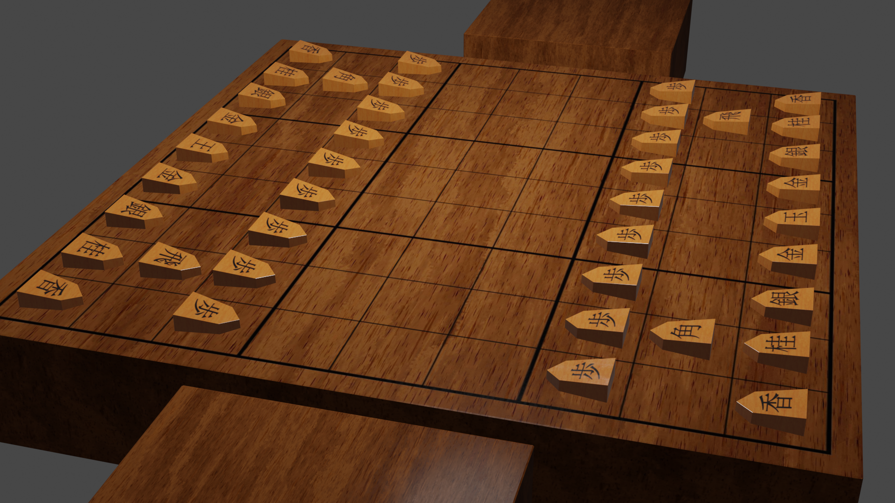
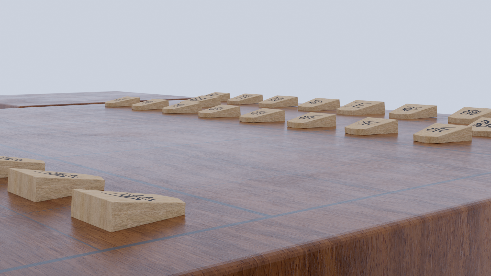
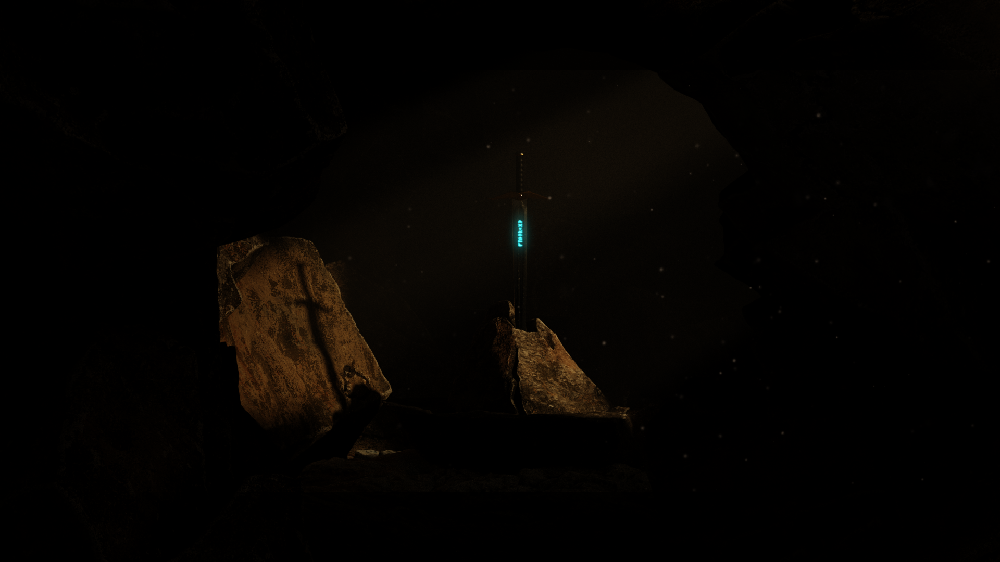
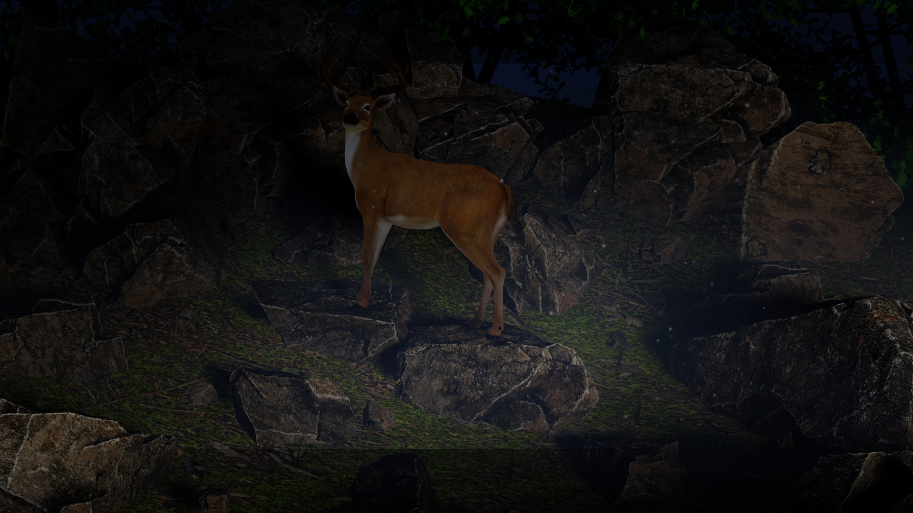

My Game Development History
I started doing game development as a hobby while I was studying at Nayland College. I've created a one fully functioning game, and one prototype of a game which I hope to develop further. I have had experience in Blender (one of the games uses blender models I made), I made three renders and one simulation. I can provide access to the two games upon request at Rhylei@aureate.dev.
Shogi
The first of the games is Shogi. Shogi is effectively Japanese chess, there are many variants such as the board has 81 squares instead of 64, most pieces have far less movement compared to chess, pieces can be promoted into a stronger piece and pieces you take can be placed on the board as your own piece.
This game was made using Blender for creating the models, Gimp for modifying textures and Unity as the game engine. The game uses mostly 4k textures with the exception being the board which uses an 8k texture.
I first built this game a few years ago but lost the project files when I re-installed windows on my computer (I also lost the other game, and all the CGI projects ☹).
I then re-created the game again in 2022, because I regretted losing the project and felt I could do a better job this time around (which I did!).
The Wandering Slime
The second game is a prototype for a game I hope to develop, it is a 2D platformer where you play as a slime that jumps around. In it's current state there isn't any gameplay as my primary focus was on asset quality and the movement of the slime.
I had a lot of good feedback about this game, I was following a tutorial series that creates a platformer RPG, however I hand crafted every texture and animation. As with the Shogi game I lost the project files when I re-installed windows on my computer. I do stil have and export of the most recent version of the game. I plan to re-create this game in the future, starting by extracting what I can out of the export.
Renders
I have also done these two renders, these are both done in Blender, with the assets sourced from elsewhere. The first render was made following a tutorial series, the second is what I attempted with the skills I had learned from the first render.
 Simulation
I also made this simulation, it is a simulation of a light breeze through some tall grass, it was made in Blender. The breeze is extremley subtle, but I like it very much. Unfortunatley the .mp4 is too dense to display on this page, so I will provide it on request at Rhylei@aureate.dev